Award
XPolicyLab received the Best Tool Paper Award at the IROS 2026 ScaleInfra Workshop.
Yuran Wang
SEU B.Sc. PKU M.Sc. NUS Ph.D.
Try to be Pioneer rather than Follower
Embodied AI · Robotic Manipulation · Computer Vision
王昱然
I am a Ph.D. candidate at the School of Computing, NUS, advised by Prof. Lin Shao. Prior to that, I spent a very enjoyable master’s time at Peking University under the supervision of Prof. Hao Dong and Dr. Ruihai Wu. Earlier, I studied at Chien-Shiung Wu College, Southeast University, where I was nominated for the Most Influential Graduate honor of Southeast University.
XPolicyLab received the Best Tool Paper Award at the IROS 2026 ScaleInfra Workshop.
OpenWAM has been released! It is a full-stack, open-source research framework for World Action Models.
Welcome aboard OpenWAM and have fun!
Released XPolicyLab, a unified standard for robot policy evaluation and deployment!
Released RoboDojo, a unified sim-and-real benchmark for generalist robot manipulation!
GarmentPile++ was accepted to ICRA 2026. Congratulations to Mingleyang Li!
In addition, four other papers were accepted to ICRA 2026. Congratulations to all collaborators!
DexGarmentLab was accepted as a Spotlight paper at NeurIPS 2025.
GarmentPile was accepted to CVPR 2025.
Ph.D., Embodied AI
Master, Embodied AI
Bachelor, Computer Science and Technology
* denotes equal contribution. Highlighted cards indicate selected work.
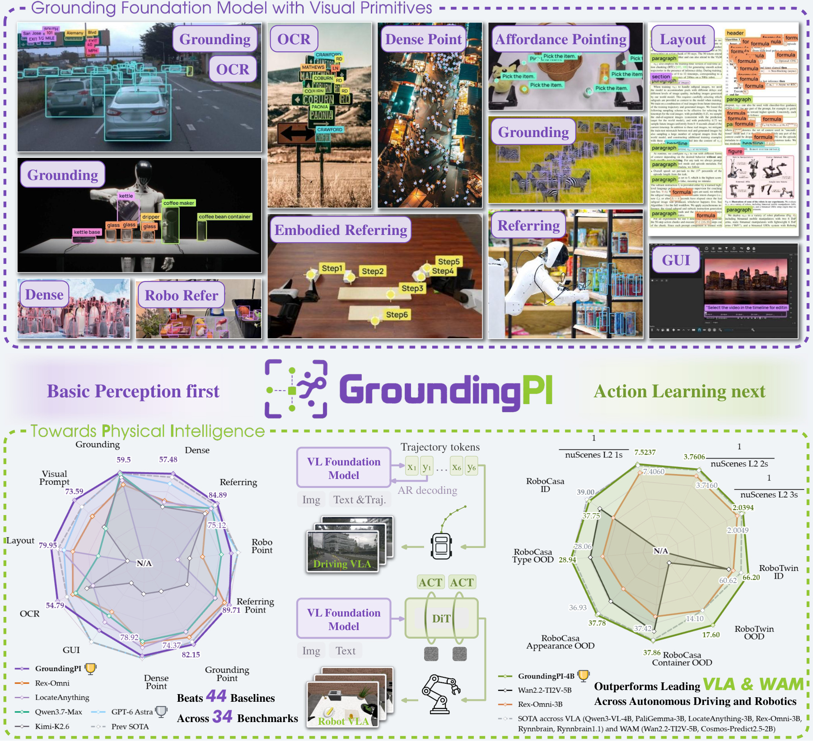
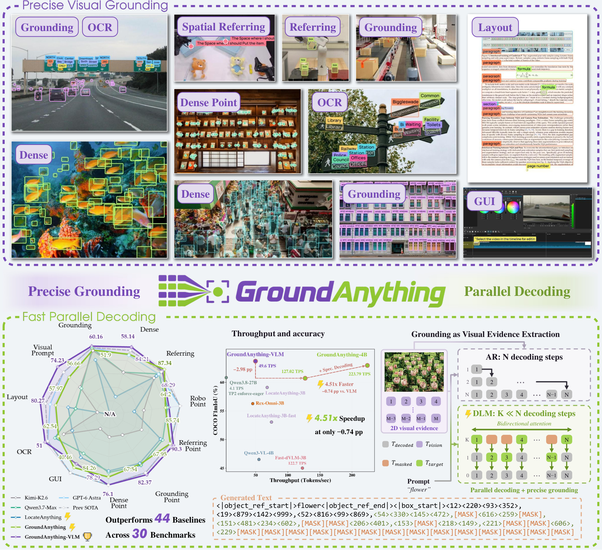
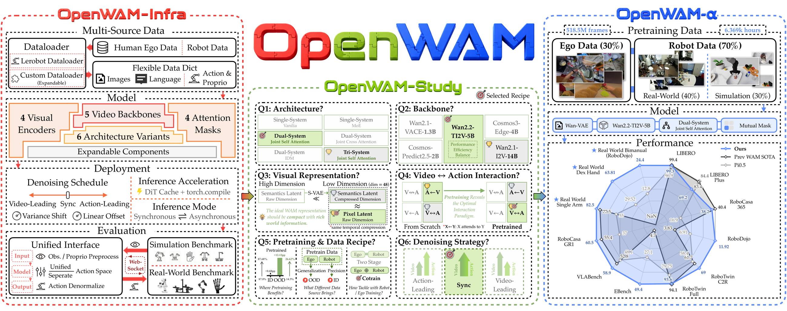

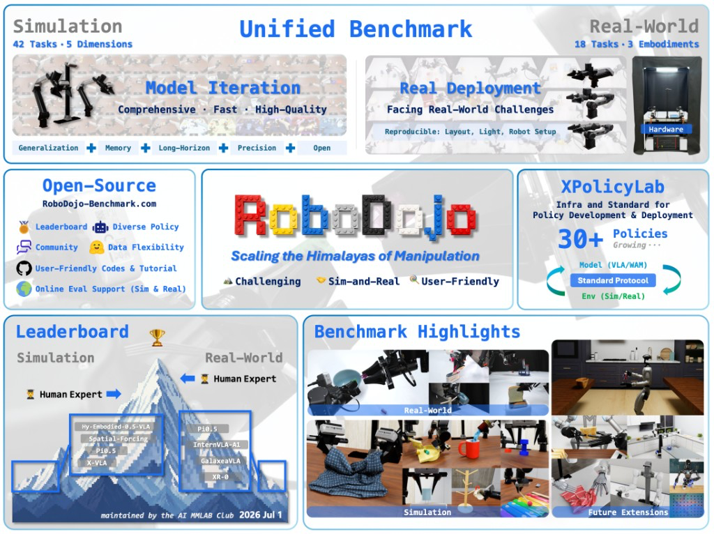
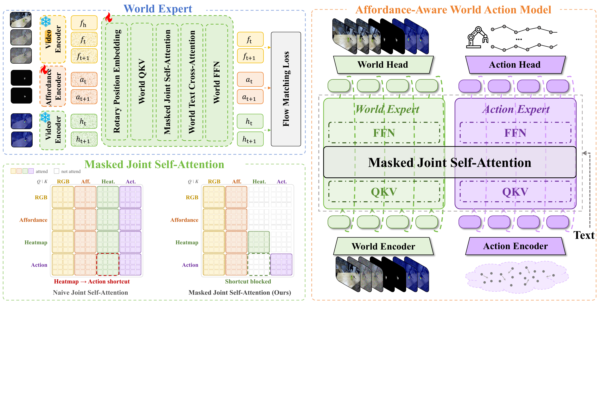
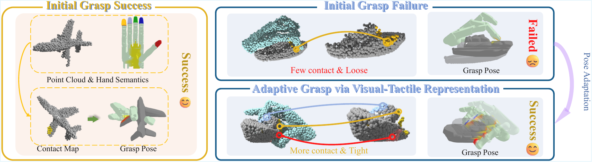
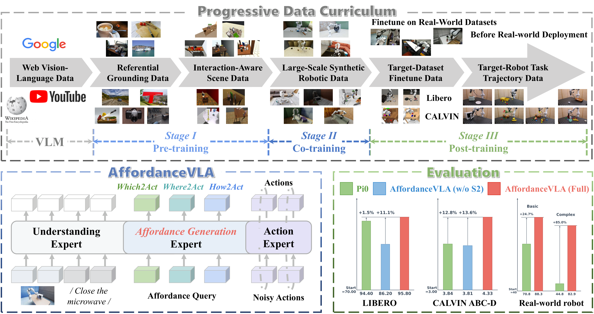
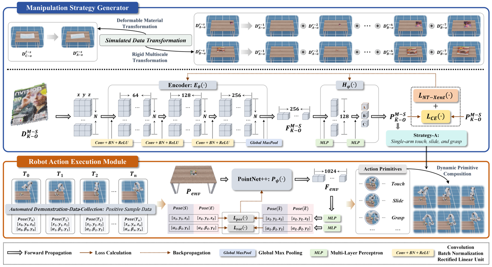
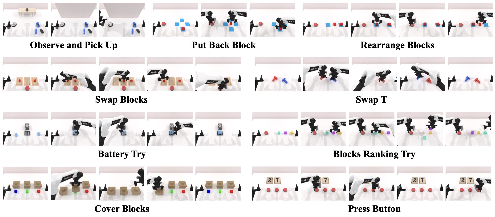
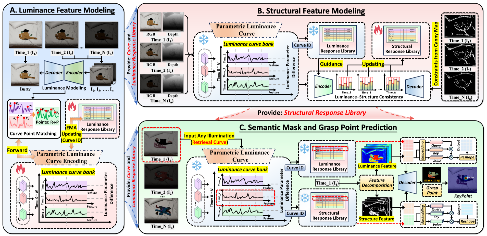
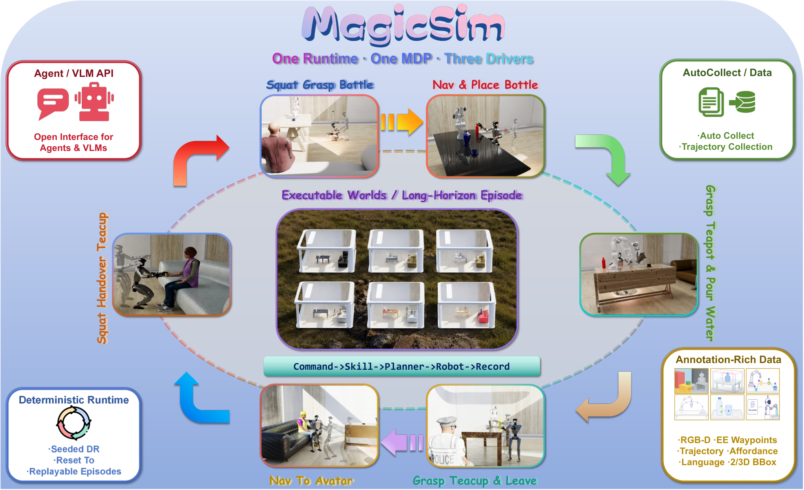
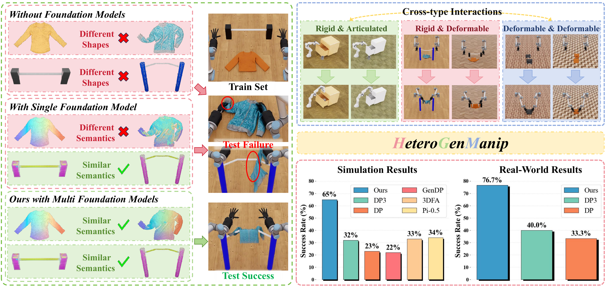
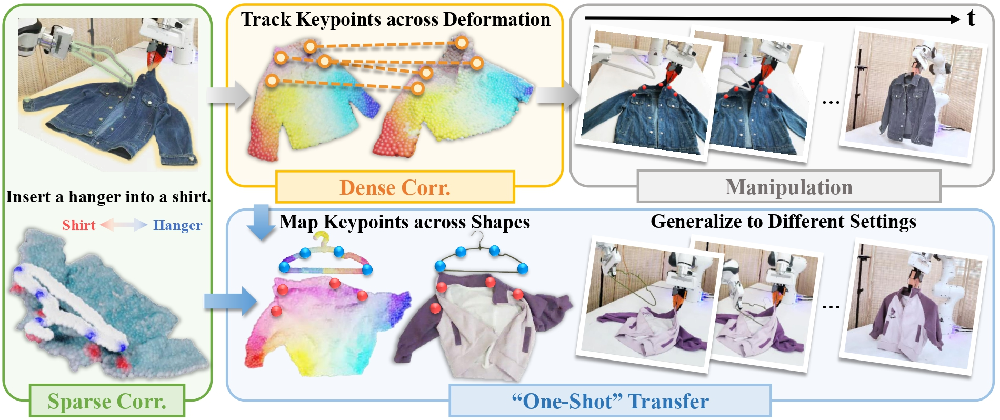
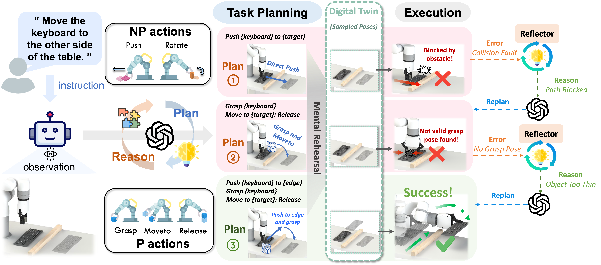
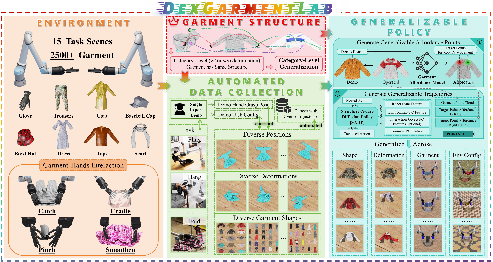
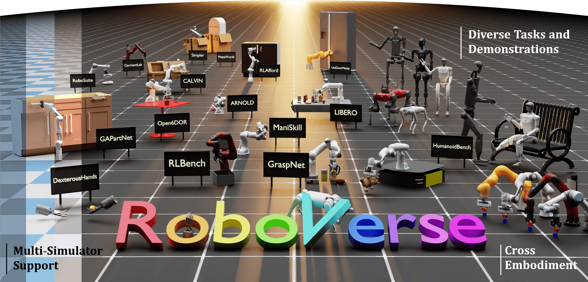
Experience
Presented OpenWAM at the GOAI forum, sharing an open, modular framework for systematic world-action model pretraining.
Talk DetailsOrganizer of the first simulation-driven competition on deformable object manipulation.
Challenge Page